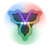

Métricas do runtime · Caderno de produção
modelo: …
SSE: …
execução: …
← dashboard
Energia acumulada (janela recente do feed)
Eventos por kind
sem dados ainda
Sensores (última leitura)
sem leituras
Atores (última atuação)
sem atuações
Feed de eventos
aguardando eventos…